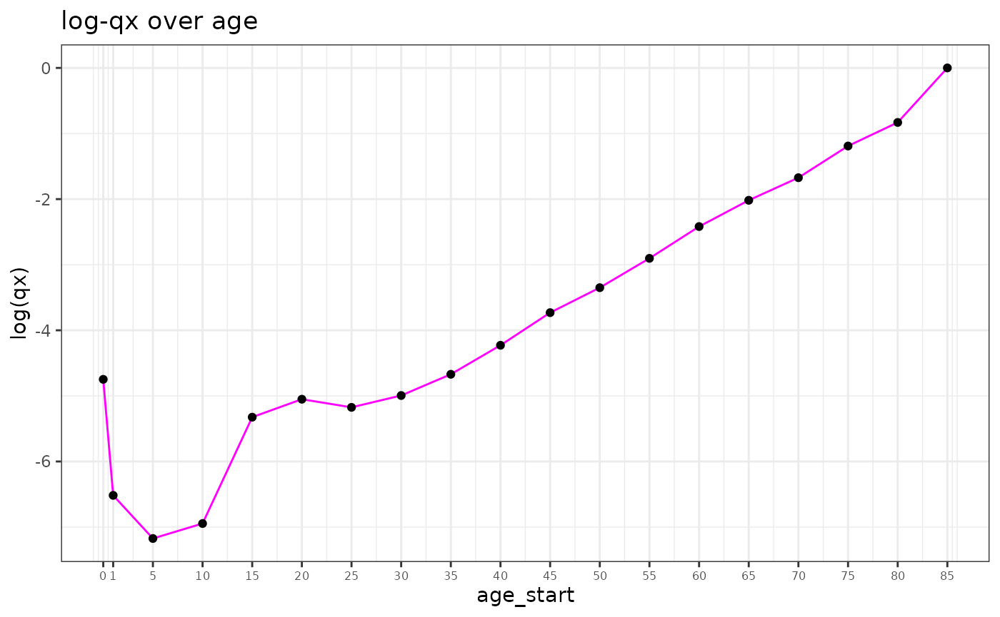
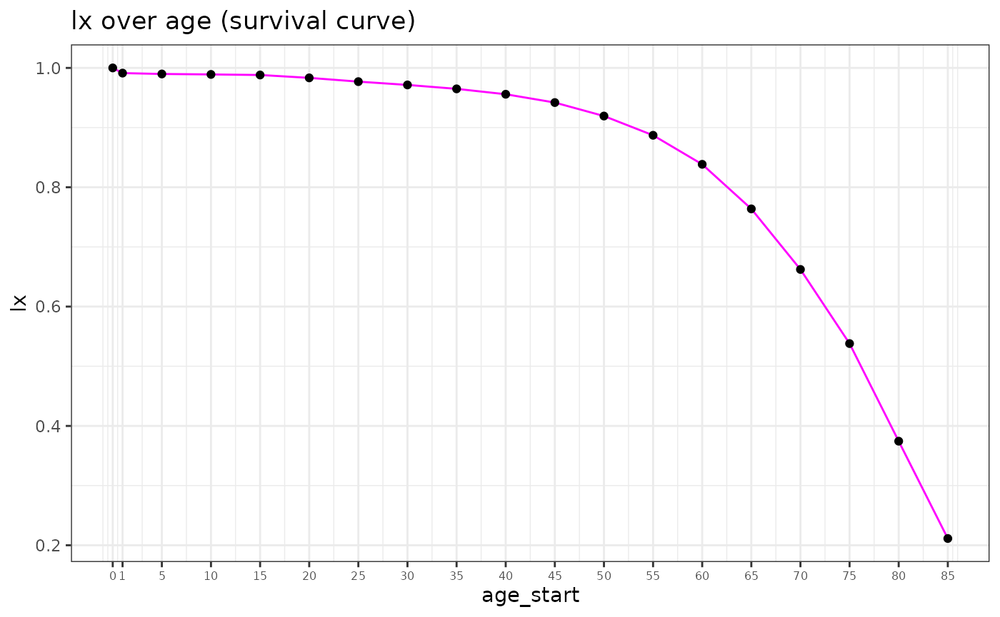

introduction_to_life_tables.RmdA life table is a table that includes information to describe the dying out of a birth cohort. This can also be a synthetic birth cohort, in which case we refer to it as a period life table.
Life tables are one of the most important devices in demography – they have been used since the 1600s! They can also be useful for other fields, because they are generalizable to other discrete “time to event” data.
Typically, life tables have one row per age group, with columns representing life table metrics, also known as parameters. The life table parameters used in this package are \(_nm_x\), \(_na_x\), \(_nq_x\), \(_np_x\), \(l_x\), \(_nd_x\), \(e_x\), \(_nL_x\), and \(T_x\). In this notation, \(x\) refers to age, and the metrics apply to either the age \(x\) directly or to the interval between ages \(x\) and \(x+n\) where \(n\) indicates the length of the interval, typically in years. We often shorthand by removing the “n” from the notation, with interval length implied.
Here’s an example of a life table, which is saved in the package as exampleLT:
| x | x+n | deaths | population | mx | ax | qx | px | lx | dx | nLx | Tx | ex |
|---|---|---|---|---|---|---|---|---|---|---|---|---|
| 0 | 1 | 72 | 29931 | 0.00 | 0.50 | 0.00 | 1.00 | 1.00 | 0.00 | 1.00 | 83.37 | 83.37 |
| 1 | 5 | 17 | 118479 | 0.00 | 2.00 | 0.00 | 1.00 | 1.00 | 0.00 | 3.99 | 82.37 | 82.56 |
| 5 | 10 | 12 | 145941 | 0.00 | 2.50 | 0.00 | 1.00 | 1.00 | 0.00 | 4.98 | 78.38 | 78.61 |
| 10 | 15 | 14 | 153298 | 0.00 | 2.50 | 0.00 | 1.00 | 1.00 | 0.00 | 4.98 | 73.39 | 73.64 |
| 15 | 20 | 31 | 156399 | 0.00 | 2.50 | 0.00 | 1.00 | 1.00 | 0.00 | 4.98 | 68.41 | 68.67 |
| 20 | 25 | 36 | 150368 | 0.00 | 2.50 | 0.00 | 1.00 | 1.00 | 0.00 | 4.97 | 63.43 | 63.74 |
| 25 | 30 | 42 | 151322 | 0.00 | 2.50 | 0.00 | 1.00 | 0.99 | 0.00 | 4.97 | 58.46 | 58.81 |
| 30 | 35 | 59 | 156045 | 0.00 | 2.50 | 0.00 | 1.00 | 0.99 | 0.00 | 4.96 | 53.49 | 53.89 |
| 35 | 40 | 101 | 175432 | 0.00 | 2.50 | 0.00 | 1.00 | 0.99 | 0.00 | 4.95 | 48.54 | 48.99 |
| 40 | 45 | 157 | 177788 | 0.00 | 2.50 | 0.00 | 1.00 | 0.99 | 0.00 | 4.93 | 43.59 | 44.12 |
| 45 | 50 | 240 | 162723 | 0.00 | 2.50 | 0.01 | 0.99 | 0.98 | 0.01 | 4.90 | 38.66 | 39.31 |
| 50 | 55 | 368 | 156276 | 0.00 | 2.50 | 0.01 | 0.99 | 0.98 | 0.01 | 4.85 | 33.76 | 34.58 |
| 55 | 60 | 525 | 145485 | 0.00 | 2.49 | 0.02 | 0.98 | 0.96 | 0.02 | 4.78 | 28.91 | 29.96 |
| 60 | 65 | 861 | 144338 | 0.01 | 2.49 | 0.03 | 0.97 | 0.95 | 0.03 | 4.67 | 24.13 | 25.46 |
| 65 | 70 | 1019 | 107574 | 0.01 | 2.48 | 0.05 | 0.95 | 0.92 | 0.04 | 4.49 | 19.46 | 21.16 |
| 70 | 75 | 1252 | 83885 | 0.01 | 2.47 | 0.07 | 0.93 | 0.88 | 0.06 | 4.23 | 14.97 | 17.06 |
| 75 | 80 | 2004 | 74092 | 0.03 | 2.44 | 0.13 | 0.87 | 0.81 | 0.10 | 3.81 | 10.74 | 13.19 |
| 80 | 85 | 3396 | 65481 | 0.05 | 2.39 | 0.23 | 0.77 | 0.71 | 0.16 | 3.13 | 6.93 | 9.75 |
| 85 | 90 | 4972 | 50605 | 0.10 | 2.30 | 0.39 | 0.61 | 0.55 | 0.21 | 2.17 | 3.80 | 6.93 |
| 90 | 95 | 3848 | 22853 | 0.17 | 2.15 | 0.57 | 0.43 | 0.34 | 0.19 | 1.13 | 1.63 | 4.86 |
| 95 | Inf | 2245 | 7728 | 0.29 | 3.44 | 1.00 | 0.00 | 0.14 | 0.14 | 0.50 | 0.50 | 3.44 |
For reference, the following is a list of life table metrics and their definitions.
\(\mathbf{_nm_x}\): mortality rate between ages \(x\) and \(x+n\). Shorthand to “mx” with implied interval width (n). Equals deaths divided by person-years lived in the interval. Mid-year population is commonly used as an adequate approximation of the person-years denominator.
\(\mathbf{_na_x}\): mean person-years lived between ages \(x\) and \(x+n\) for those who die within the interval. Shorthand to “ax” with implied interval width (n).
\(\mathbf{_nq_x}\): probability of death between ages \(x\) and \(x+n\), conditional on survival to age \(x\). Shorthand to “qx” with implied interval width (n). Equals deaths in the interval divided by survivors to x-th birthday. Examples: 5q0 = probability of death between birth and age 5; 45q15 = probability of death between age 15 and age 60 conditional on survival to age 15.
\(\mathbf{l_x}\): proportion of the cohort surviving to age \(x\).
\(\mathbf{e_x}\): life expectancy at age \(x\) – mean number of years lived after x-th birthday by those surviving to age \(x\). Life expectancy at birth is \(e_0\).
\(\mathbf{_nL_x}\): total person-years lived between age \(x\) and \(x+n\).
\(\mathbf{T_x}\): total person-years lived above age \(x\).
\(\mathbf{_nd_x}\): proportion of the cohort dying between ages \(x\) and \(x+n\). Shorthand to “dx.”
\(\mathbf{_np_x}\): probability of survival between ages \(x\) and \(x+n\) conditional on survival to age \(x\). Inverse of \(qx\).
We often reduce life tables to age patterns of log probability of death (\(\text{log}(q_x)\)) or to survival curves (\(l_x\) over age), which can be easily displayed and vetted in plots.

The lifetableUtils package includes many utility functions for calculations that leverage the mathematical relationships between life table metrics to build out a complete life table. This section will provide details and examples regarding the use of these functions and their underlying methods. We will accomplish this by following along the example of building the example life table above from death counts and population.
Note that this document and this package do not conatain an exhaustive list of relationships between metrics. Additionally, some equations presented rely on assumptions and others are true relationships that are always valid. For more details, see the Preston Demography textbook, from which many of these details were drawn.
From raw death count and population data, the place to start with a life table is mx.
\[m_x = \frac{\text{deaths}}{\text{person-years}} \approx \frac{\text{observed deaths}}{\text{mid-interval population}}\] Let’s load in our example data and calculate mx:
If we have mx and qx we can directly calculate ax. However, we often use mx and ax to get qx in the first place, and so have to make some assumptions to get ax. Empirical calculations of ax would require detailed and accurate data on age of death in days (such as paired date of birth and date of death), which is typically unavailable.
Rule of thumb:
One option is to assume all deaths occur in the middle of the interval, so \(ax \approx n/2\). This assumption works well for most ages, but it doesn’t work as well for very young or very old where mortality can change rapidly over the interval.
Another assumption we can make is that the age-specific death rate is constant between \(x\) and \(x+n\). Under this assumption, \[_na_x = n + \frac{1}{_nm_x} - \frac{n}{1- e^{-n \cdot {_nm_x}}}.\] The function mx_to_ax implements this assumption.
Using our example data, we get:
dt <- demUtils::gen_length(dt, col_stem = "age") dt[, ax := mx_to_ax(mx = mx, age_length = age_length)]
Note that we can use demUtils::gen_length to add the age_length column given age_start and age_end.
1a0 and 4a1:
Preston et al adapted an analysis first completed by Coale and Demeny (1983) to derive a relationship between infant mortality rate (1m0) and under-5 ax values (1a0 and 4a1). In the absence of reliable data to produce ax, these relationships can be used to predict ax from infant mx:
| Males | Females | |
|---|---|---|
| 1a0: | ||
| If 1m0 >= 0.107 | 0.330 | 0.350 |
| If 1m0 < 0.107 | 0.045 + 2.684 * 1m0 | 0.053 + 2.800 * 1m0 |
| 4a1: | ||
| If 1m0 >= 0.107 | 1.352 | 1.361 |
| If 1m0 < 0.107 | 1.651 - 2.816 * 1m0 | 1.522 - 1.518 * 1m0 |
Use the gen_u5_ax function to implement this method:
Graduation method: One strategy for selecting ax values is based on the level and slope of the \(_nm_x\) function. Comparing two populations with the same 5m60, the population with more rapidly rising mortality rate with respect to age will have deaths that are more concentrated in the later part of the interval (higher ax). Comparing two populations with the same slope in mx, the one with higher mortality rate will have more deaths at the beginning of the interval (lower ax).
To utilize this theory, we can implement iteration as described in the Preston book, and originally proposed by Keyfitz (1966): \[_na_x = \frac{\frac{-n}{24} {_nd_{x-n}} + \frac{n}{2} {_nd_x} + \frac{n}{24} {_nd_{x+n}}}{_nd_x}\] Where dx is derived from the conversion from mx to qx. However, since the mx –> qx conversion requires ax, this requires us to pick a starting place for ax (like n/2), solve for dx, solve for ax, and so on until convergence.
From mx and ax, we can solve directly for qx:
\[_nq_x = \frac{n \cdot {_nm_x}}{1 + (n - {_na_x}) \cdot {_nm_x}}\] For the terminal age group, qx should be 1 because all individuals surviving to the terminal age group will die in that age group (probability of death = 1).
The mx_ax_to_qx combines the equation for qx and the requirement of terminal qx equalling one by setting \(qx = 1\) if age_length = Inf.
dt[, qx := mx_ax_to_qx(mx = mx, ax = ax, age_length = age_length)]
Other functions that utilize this relationship but solve for different metrics are mx_qx_to_ax and qx_ax_to_mx.
You can also solve for qx under the assumption of contant mortality rate within an interval, which removes ax from the relationship:
\[_nq_x = 1 - e^{-n \cdot {_nm_x}}.\]
dt[, qx_compare := mx_to_qx(mx = mx, age_length = age_length)]
These two qx values are the same, because the implied ax in mx_to_qx is equivalent to the ax we generate under the assumption in mx_to_ax.
To calculate the proportion of a cohort surviving to age \(x\) (lx), we set \(l_0 = 1\) (100% survive to birth), and recursively calculate:
\[l_{x+n} = l_x \cdot (1 - _nq_x)\]
or in words, the proportion surviving to age \(x\) times the proportion of those survivors who do not die between \(x\) and \(x+n\) is the proportion surviving to age \(x+n\).
Our qx_to_lx function can perform this calculation:
Proportion of cohort dying between ages \(x\) and \(x+n\) (dx) is \(_nq_0\) to start, then \(_nd_x = l_x - l_{x+n}\) thereafter (difference between proportion surviving to age \(x\) and proportion surviving to age \(x+n\)).
To calculate dx, use lx_to_dx:
The person-years lived between ages \(x\) and \(x+n\) (\(_nL_x\)) can be broken down into:
such that:
\[_nL_x = n \cdot l_{x+n} + _na_x \cdot {_nd_x}.\]
For the terminal age group:
\[{_{\infty}L_x} = \text{person-years lived above age } x = \frac{\text{person-years lived above age }x}{\text{deaths over age }x} \cdot \text{deaths over age }x= \frac{l_x}{_{\infty}m_x}\]
Use the gen_nLx function to calculate with this method:
Life expectancy above age \(x\) (mean person-years lived above age \(x\)) is equal to the total person years over age \(x\) divided by the persons surviving to age \(x\):
\[e_x = \frac{T_x}{lx}.\]
For the terminal age group, \(a_x = e_x\) because everyone surviving to the interval dies in the interval.
Calculate \(e_x\) with gen_ex:
gen_ex(dt)
The majority of these functions can be combined for convenience with the lifetable function. lifetable requires at least two of \(m_x\), \(a_x\), and \(q_x\), but solves out the remaining life table metrics following the methods and functions described here.
The resulting life table is the life table at the top of this document.
Preston Samuel H, Patrick H, Michel G. Demography: measuring and modeling population processes. MA: Blackwell Publishing. 2001.
Coale AJ, Demeny P, Vaughan B. Regional model life tables and stable populations: studies in population. Elsevier; 2013 Oct 22.
Keyfitz N. A life table that agrees with the data. Journal of the American Statistical Association. 1966 Jun 1;61(314):305-12.